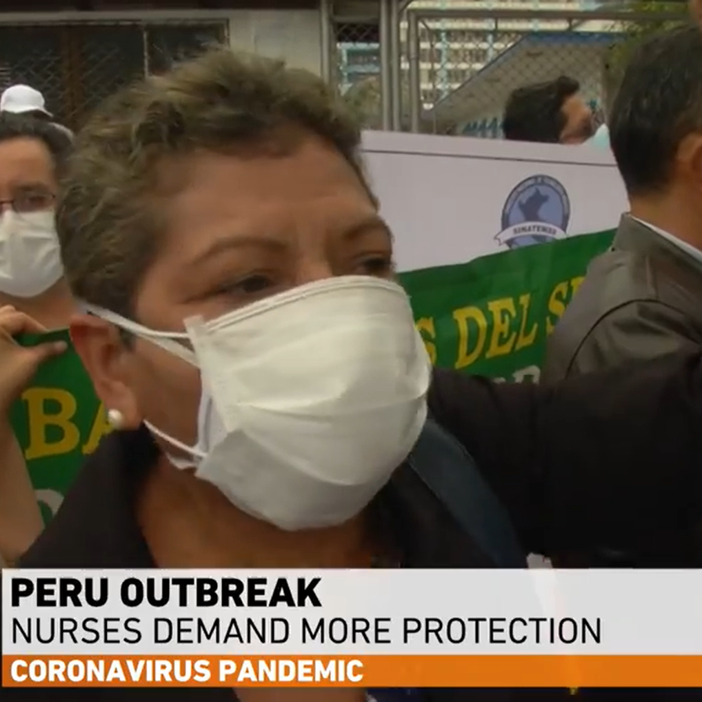
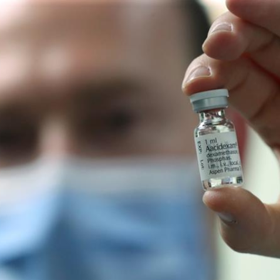
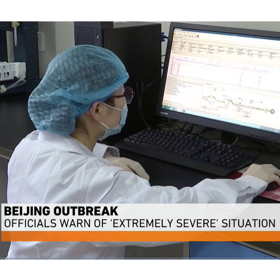
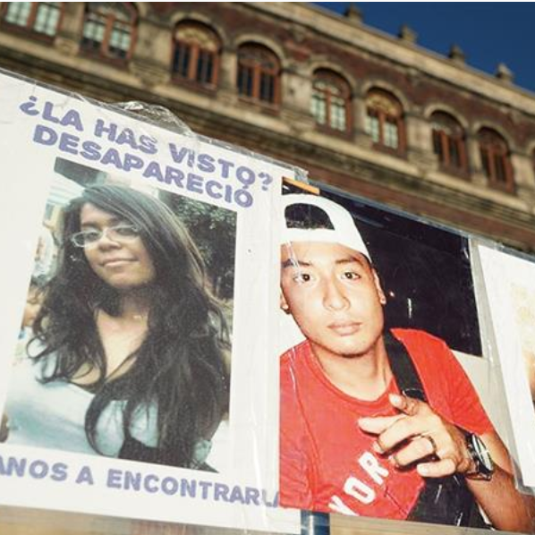

Public opinion Public opinion
Recent News

{kind=link}
{kind=link}
Peru COVID-19 outbreak: Health workers demand more protection
Healthcare workers in Peru have been protesting against a lack of personal protective equipment. Peru has one of the highest rates of coronavirus infections in South America. The government has rushed to test more than 200,000 people, build makeshift hospitals and fly doctors around the country, but many say it is still not doing enough to protect front-line workers. Al Jazeera’s Mariana Sanchez reports from Lima.
Steroid drug: A 'breakthrough' in the fight against coronavirus?
A cheap and widely-used steroid called dexamethasone has become the first drug shown to be able to save lives among COVID-19 patients in what scientists said is a "major breakthrough" in the coronavirus pandemic. Trial results announced on Tuesday showed dexamethasone, which is used to reduce inflammation in other diseases such as arthritis, reduced death rates by around a third among the most severely ill of COVID-19 patients admitted to hospital.
Remdesivir shows modest improvement in moderate COVID-19 patients
Gilead Sciences Inc on Monday reported its antiviral drug remdesivir provided a modest benefit in patients with moderate COVID-19 given a five-day course of the treatment. In contrast, those who received the medicine for 10 days in the study did not fare as well. Remdesivir, which is administered intravenously in hospital, is the first drug to show improvement in COVID-19 patients in formal clinical trials, and new information about its efficacy is being closely watched around the world, as nations battle the pandemic.
Beijing shuts schools over new coronavirus outbreak: Live updates
 Beijing's
education commission has ordered the closure of the capital's schools
again following a new outbreak of the coronavirus.
The steroid dexamethasone has been found to save the lives of one-third
of the most serious COVID-19 cases, according to trial results by the
University of Oxford, hailed as a "major breakthrough" in the fight
against the disease.More than 8 million people have been confirmed to
have the coronavirus around the world. Nearly 4 million have recovered,
while at least 438,000 have died, according to data compiled by Johns
Hopkins University. The US, Brazil and the UK have reported the most
deaths.
Beijing's
education commission has ordered the closure of the capital's schools
again following a new outbreak of the coronavirus.
The steroid dexamethasone has been found to save the lives of one-third
of the most serious COVID-19 cases, according to trial results by the
University of Oxford, hailed as a "major breakthrough" in the fight
against the disease.More than 8 million people have been confirmed to
have the coronavirus around the world. Nearly 4 million have recovered,
while at least 438,000 have died, according to data compiled by Johns
Hopkins University. The US, Brazil and the UK have reported the most
deaths.
China prepares to act against new COVID-19 outbreak
One of China's top disease experts says the next 36 hours will be crucial in predicting the effect of a new coronavirus outbreak in the capital. Some neighbourhoods in Beijing were put back into lockdown on Sunday after more than 100 new infections were confirmed. The city had gone more than 50 days without any reported cases. Al Jazeera's Priyanka Gupta reports.
Dexamethasone reduces death risk in severe COVID-19 cases: Trial
Dexamethasone, a cheap and widely used steroid, has been found to dramatically reduce the risk of dying from COVID-19, the disease caused by the new coronavirus, in what scientists in the United Kingdom have hailed as a "major breakthrough". Researchers led by a team from the University of Oxford administered dexamethasone, which is used to reduce inflammation in other diseases, to more than 2,000 severely ill COVID-19 patients.
Mexico: Coronavirus pandemic 'hasn't stopped the disappearances'
Mexico City - Painted in large white letters on the street outside the windows of Mexico's National Palace, is both a question and a plea: "Where are they?" About a dozen families, along with their supporters, have set up camp outside the residence of President Andres Manuel Lopez Obrador for nearly two weeks to demand the government take their search for the country's estimated 61,000 disappeared seriously. Already struggling with the effects of the COVID-19 pandemic and subsequent lockdowns, the families fear the fight to find Mexico's disappeared is being further derailed by austerity measures announced by Lopez Obrador in April, which they say will end vital funding and support to families of the disappeared.
WHO warning as 100,000 new coronavirus cases logged daily: Live
China has turned to mass testing and district lockdowns in Beijing after a jump in cases connected with a wholesale food market in the capital. UN agencies have warned the pandemic could lead to the deaths of more than 50,000 under-fives in the Middle East and North Africa by the end of the year. More than 7.9 million people are confirmed to have the coronavirus around the world. Nearly 3.8 million have recovered, while at least 433,394 have died, according to data compiled by Johns Hopkins University.
News Option
Ireland says international quarantine to remain at least until July 9
Ireland's 14-day quarantine for people arriving from other countries will remain in place at least until July 9 and the government will review the issue at a meeting next week, acting prime minister Leo Varadkar said. "My ambition ... is to reopen between countries where the virus is as suppressed as it is here, but we want to do that in a coordinated fashion with other European countries, but that hasn't quite happened yet," Varadkar told journalists.
Guatemala replaces health minister and his three deputies
Guatemala's Health Minister Hugo Monroy and three deputies in his ministry have been replaced, the office of the president said and announced the names of their replacements. It was not immediately clear why Monroy and the three vice ministers left their jobs. Monroy has faced criticism over his handling of the coronavirus pandemic, including the purchasing of personal protection equipment and pay to health workers.
Switzerland to allow gatherings of up to 1,000 people
Switzerland has announced that gatherings of up to 1,000 people would be permitted next week, in a fourth stage of gradually easing the restrictions imposed to control COVID-19. The wealthy Alpine nation has managed to avoid the worst of the coronavirus pandemic, despite its border with northern Italy - Europe's early epicentre for deaths and infections. The physical distancing requirement is being cut from two metres to 1.5 metres from Monday, while the midnight curfew on restaurants and nightclubs is also being lifted, as is the requirement to be seated at tables in bars. The maximum size of gatherings will be raised on Monday from 300 to 1,000 people, the government said, so long as the number of people to be contact-traced in case of an infection remains at no more than 300, through measures such as separating groups into sections.
France reports less than 20 new coronavirus deaths
The number of people who died from coronavirus infection in France rose by 14 to 29,617, the lowest increase in five days. The number of people in hospital for COVID-19 infections fell by 155 to 9,970, the first time that total is lower than the 10,000 threshold in almost three months.
US capital to begin phase two of reopening next week
 The US capital will begin phase two of its reopening
process next week as the number of COVID-19 cases continues to
drop, Mayor Muriel Bowser has announced.
The district will enter the next phase on Monday after 15 days
of sustained drops in community spread, Bowser said in a
statement, bringing it in-line with neighboring Virginia and
Maryland, with the exception of Montgomery County, which is set
to enter phase two later Friday.
After adding 49 cases on Thursday, the district has 9,952
confirmed COVID-19 infections. In total, 530 people have died
from the virus in Washington, D.C., including three on Thursday,
while 1,162 of those who contracted the virus have been cleared
from isolation.
During phase two, restaurants and non-essential retail stores
will be allowed to resume indoor activity at half capacity.
Mass gatherings will be limited to 50 people, and places of
worship will be allowed to hold services with capacity capped at
either 50 percent or 100 people.
The US capital will begin phase two of its reopening
process next week as the number of COVID-19 cases continues to
drop, Mayor Muriel Bowser has announced.
The district will enter the next phase on Monday after 15 days
of sustained drops in community spread, Bowser said in a
statement, bringing it in-line with neighboring Virginia and
Maryland, with the exception of Montgomery County, which is set
to enter phase two later Friday.
After adding 49 cases on Thursday, the district has 9,952
confirmed COVID-19 infections. In total, 530 people have died
from the virus in Washington, D.C., including three on Thursday,
while 1,162 of those who contracted the virus have been cleared
from isolation.
During phase two, restaurants and non-essential retail stores
will be allowed to resume indoor activity at half capacity.
Mass gatherings will be limited to 50 people, and places of
worship will be allowed to hold services with capacity capped at
either 50 percent or 100 people.
Airlines' legal challenge of UK quarantine policy to be heard early July
A legal challenge by British Airways, easyJet and Ryanair against the UK government's decision to introduce a 14-day quarantine for travellers will be heard in early July, barristers involved in the case have said. "The airlines claim that the regulations are irrational and disproportionate. A hearing has been listed for early July," Blackstone Chambers said in a statement.
Italy reports 47 coronavirus deaths, 251 new cases
Deaths from the COVID-19 epidemic in Italy climbed by 47, against 66 the day before, the Civil Protection Agency said, while the daily tally of new cases decreased to 251 from 333 on Thursday. The total death toll since the outbreak came to light on Feb. 21 now stands at 34,561 the agency said, the fourth highest in the world after those of the United States, Brazil and Britain. The number of confirmed cases amounts to 238,011 the eighth highest global tally. People registered as currently carrying the illness fell to 21,543 from 23,101 the day before.